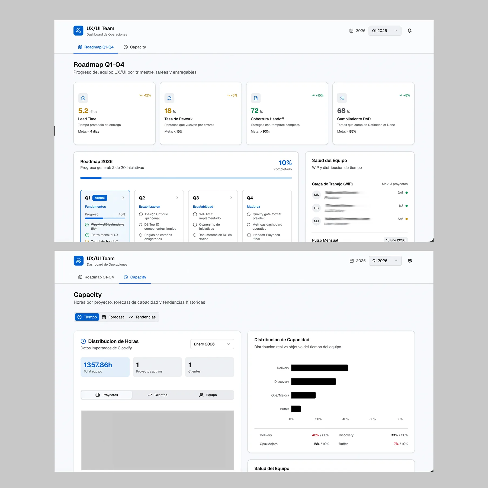

Proyecto Destacado · UX Lead
Goiar
Suite Gonnectia — Diseño integral de producto para un ecosistema SaaS que conecta comercios, clientes y operaciones de cobranza con flujos completos navegables, AI integrada y expansión internacional.
Como UX Lead, diseño de punta a punta cuatro frentes que sostengo en paralelo: el producto core, la cuenta más grande del ecosistema, el aporte de UX al proceso comercial y la gestión del equipo de diseño — con QA asistido por AI, prototipado con FigmaMake + Claude y automatización de historias de usuario desde Jira.
Verticales de producto
Países activos
Flujos diseñados
Clientes B2B
01 — Verticales
Frentes de Trabajo
Mi trabajo en Goiar se despliega en cuatro frentes que se retroalimentan: el producto core, la cuenta estratégica más grande del ecosistema, el aporte de UX al proceso comercial, y el liderazgo del equipo de diseño.
Producto
Suite Gonnectia — GoDigital B2B, GoDigital B2C, GoCollect
Mi aporte
De la investigación a producción: diseñé la Suite Gonnectia completa —tres productos fintech sobre un mismo sistema de diseño— y los llevé a vivir muchas veces más rápido que si se construyeran desde cero.
Empecé por entender al usuario: entrevistas en etapa F&F y ya en producción, journey mapping por rol y arquitectura de la información. Con eso definí los flujos end-to-end y el diseño de interfaz, iterando con feedback constante de Comercial, Producto y Desarrollo hasta el handoff.
GoDigital B2C (app del cliente final), GoDigital B2B (panel de comercios adheridos) y GoCollect (cobranzas del equipo comercial) comparten tokens, patrones y librería — pero con distinta jerarquía de información según el rol de cada usuario.
12 entrevistas con usuarios en etapa F&F y ya en producción, en Argentina y Chile.
Hallazgo: el alta de comercios en GoDigital B2B se abandonaba cuando se pedían datos que el comercio ya había dado en otro paso — rediseñé el flujo para autocompletarlos.
Validación: 2 rondas de test de usabilidad antes de cada pase a producción, con ajustes de flujo entre ronda y ronda.
Cuenta Estratégica
Clientes Agro
Mi aporte
Diseño y evoluciono el portal completo del cliente —la cuenta más grande del agro en Argentina (confidencial)— desde el research hasta la interfaz final.
Trabajo el portal de punta a punta: benchmark de portales similares del sector, discovery de nuevas funcionalidades, rediseño de flujos y pantallas existentes, y entrevistas directas con los usuarios del cliente para validar cada hipótesis antes de pasarla a desarrollo.
En paralelo, diseñé un dashboard con AI que le dio al cliente autonomía total sobre sus métricas —sin depender de un analista de datos— y corro una auditoría de UX/UI asistida por AI sobre todo el portal: bugs, accesibilidad y propuestas de mejora.
De Lead a Kickoff
Comercial UX/UI
Mi aporte
Diseño cada pieza que el equipo comercial necesita para cerrar una cuenta, antes de que exista contrato: landings, prototipos y presentaciones.
Landings por producto e industria (agro, seguros, logística), prototipos con el look & feel de cada cliente potencial y presentaciones de propuesta de valor. Participo en el kickoff de cada cuenta para fijar los criterios de diseño desde el primer día.
Mi Rol Como Líder
Liderazgo del Equipo de UX/UI
Mi aporte
Lidero al equipo en dos planos: como referente técnico de diseño y como responsable de la gestión de personas y procesos.
Defino la visión UX y el roadmap trimestral alineado a objetivos de negocio, superviso la calidad del Design System y guío al equipo en decisiones de diseño complejas. En paralelo, distribuyo tareas, hago mentoría y seguimiento de carrera, y soy el punto de contacto de diseño frente a Product, Dev y Comercial.

02 — Exploración
Exploración con AI
Además de los cuatro frentes centrales, uso AI para acelerar tareas puntuales dentro y fuera del proceso de diseño. Estos son algunos de los experimentos que ya están en uso.
Lo más importante
De Figma a pantallas con AI
Llevamos todo el aplicativo de Figma a pantallas recreadas con AI, logrando velocidad, consistencia y escalabilidad en la producción de UI en toda la plataforma.
Agente de Auditoría AI
Un agente que audita la plataforma y el sitio web: detecta bugs y problemas de accesibilidad, revisa SEO, GEO y SEM, y genera propuestas de mejora e insights semanales.

Dashboard de Capacity
Roadmap, carga de horas y capacity del equipo en tiempo real, con seguimiento de tareas por diseñador.
Automatizaciones de Equipo
Design System automatizado, skill de carga de horas, generación de presentaciones y creación de historias de usuario en Jira, con documentación automática en Notion.
Prode
Carga de partidos, visualización de resultados, ranking e información de fecha y hora — proyecto propio para jugar en equipo.
03 — Proceso
Metodología de Trabajo
Independientemente del frente, sigo el mismo proceso de diseño de punta a punta: investigación, arquitectura, prototipado de alta fidelidad y un ciclo continuo de QA post-lanzamiento.
Discovery
Entrevistas, journey mapping y benchmarking por vertical.
Arquitectura
Wireframes, flujos por rol y componentes compartidos.
UI & Prototipos
Figma + FigmaMake, testing con usuarios reales.
Handoff & QA
Specs, Design System y QA continuo con AI.
"El desafío de Goiar es diseñar coherencia en la complejidad: múltiples productos, roles, geografías y modelos de negocio bajo una experiencia unificada."
Impacto
Sostener estos cuatro frentes en paralelo significa equilibrar velocidad con profundidad: sistemas que escalan sin perder la experiencia específica de cada rol, cliente y geografía.